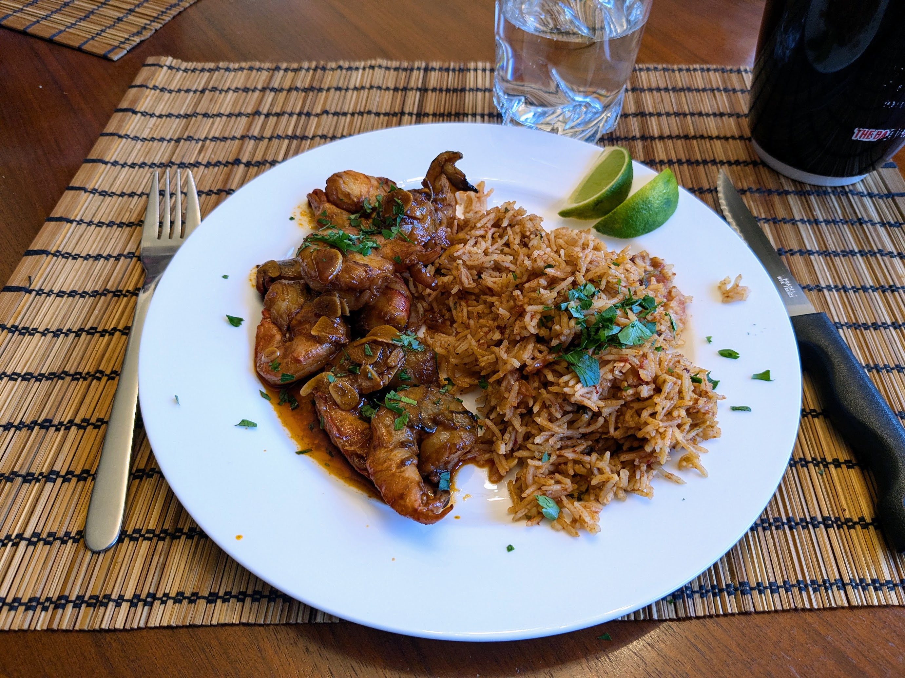

Riz mexicain au cuiseur à riz

Ici avec des crevettes sous vide à l'espagnole
Pour 2 personnes :
- 140g de riz long grain ou basmati (c'est une "cup" de mon appareil Zojirushi, ou 3/4 de "cup" de mesure américaine)
- Du bouillon de poulet ou de légumes, en quantité indiquée par le cuiseur à riz (environ 250mL)
- Deux cuillères à soupe de concentré de tomates
- Un petit oignon rouge
- Une grosse gousse d'ail
- Une demi-cuillère à café de cumin moulu
- (Facultatif) Un piment chipotle dans de la sauce adobo, ou une belle pincée de chipotle en poudre
- Sel, poivre
- Rincer le riz et le mettre dans le cuiseur à riz avec le bouillon.
- Éplucher et émincer l'oignon et l'ail, couper le piment en petits bouts. Tout mélanger dans le bol du cuiseur à riz, mettre en marche pour un cycle.
- Mélanger et laisser reposer 5 minutes en gardant au chaud dans le cuiseur à riz. Si ça a l'air un peu trop humide, laisser reposer un peu plus longtemps.
- Servir avec un peu de coriandre ou de persil haché, et des tranches de citron vert.